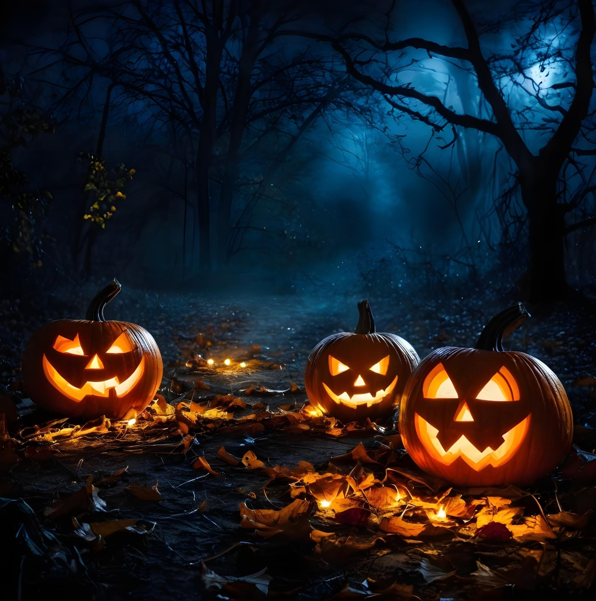

Noc duchow, dyn i strachow
Halloween to popularne swieto obchodzone 31 pazdziernika. Jest znane glownie w Stanach Zjednoczonych, ale obchodzi sie je rowniez w wielu innych krajach.
Jedna z najpopularniejszych tradycji jest wycinanie twarzy w dyniach i umieszczanie w nich swieczek. Ludzie przebieraja sie za duchy, czarownice i potwory.
Dzieci odwiedzaja domy sasiadow i prosza o slodycze. Jest to jedna z najbardziej znanych tradycji Halloween.
Nazwa Halloween pochodzi od angielskiego All Hallows Eve.

Swieto pelne dyn, przebran i dobrej zabawy.
Autor: Jan Kowalski | 2026